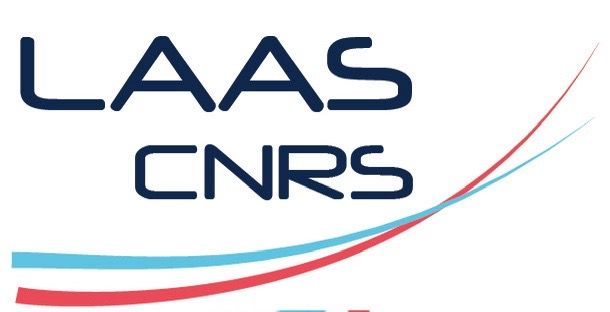
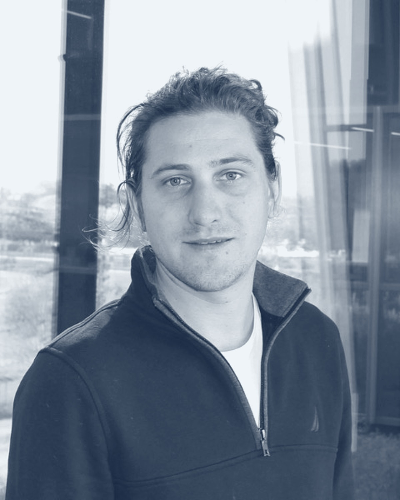
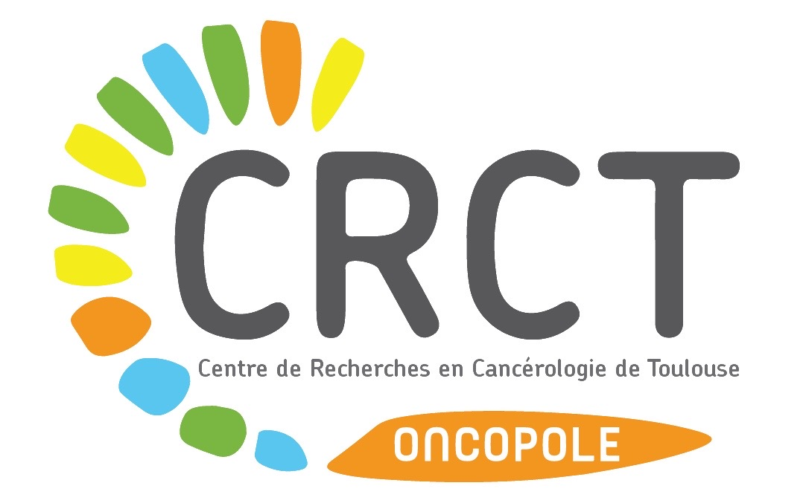

Fluid–structure interactions
How deformation redirects transport pathways.

Jean Cacheux CNRS Researcher · ToulouseFluid transport in living tissues
Understanding how biological tissues organise, regulate and adapt fluid transport across scales.
Scroll to explore ↓
Biological tissues are permeated by water, solutes, cells and signalling molecules. Their movement depends on the coupling between pressure, deformation, geometry and active biological processes.
My research combines mechanics, fluid physics and quantitative biology to uncover the principles linking tissue architecture to transport function.
How deformation redirects transport pathways.
How porous living matter stores and releases fluid.
How microscopic flows become tissue-scale function.
Publications are loaded automatically from OpenAlex through my ORCID. Conference papers, proceedings, posters, books and non-journal preprints are excluded.
Metadata are supplied by OpenAlex and may occasionally differ from Google Scholar.
My research is developed through close collaborations within CNRS and with the Toulouse Cancer Research Center.
Primary affiliation
Collaborations in mechanics, robotics, modelling and the physics of living systems.

Major research collaboration
A close collaboration connecting tissue mechanics and transport phenomena with pancreatic cancer biology.
Discover the ImPACT team ↗CNRS Research Director · LAAS–CNRS
Mechanics and modellingPhD Student · LAAS–CNRS
Fluid mechanicsPhD Student · LAAS–CNRS
Living tissuesResearch Engineer · LAAS–CNRS
Experimental platformsINSERM Research Director · Head of the ImPACT team
Pancreatic cancer · Translational researchLaboratory Engineer · ImPACT team
Experimental cancer researchPhD Candidate · ImPACT team
Pancreatic cancer researchCNRS Researcher at LAAS–CNRS, Toulouse
I study the mechanics of fluid transport in living tissues, with a particular interest in fluid–structure interactions, poromechanics and multiscale transport. My work connects physical modelling with experimental collaborations in biology and cancer research.
I collaborate closely with colleagues at LAAS–CNRS and with the ImPACT team at the Toulouse Cancer Research Center.
LAAS-CNRS
7 avenue du Colonel Roche
31031 Toulouse Cedex 4, France
LAAS-CNRS website ↗